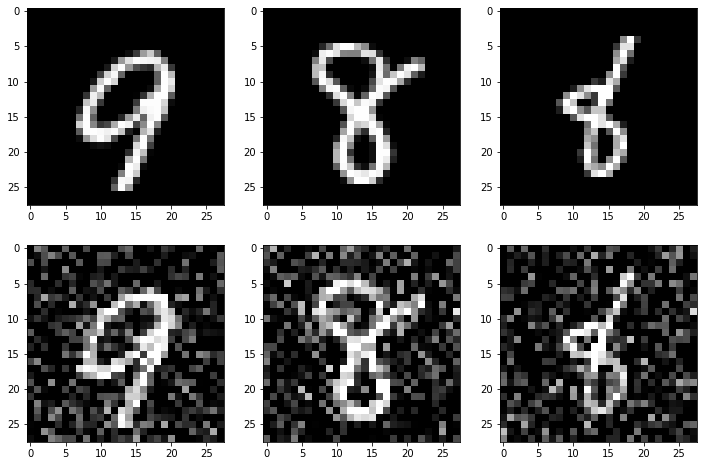
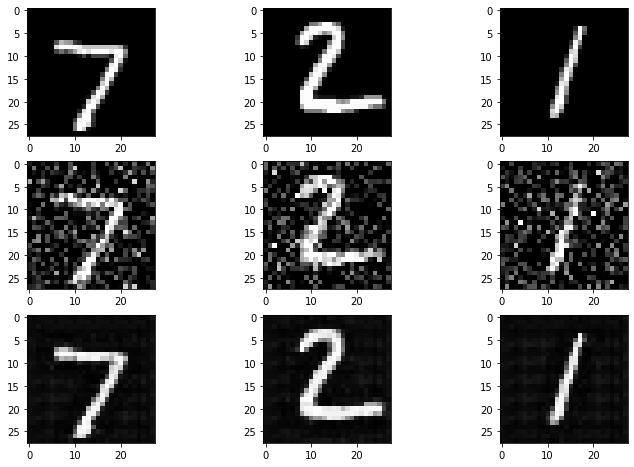

CNN Autoencoder for Image Denoising
Dataset used#
MNIST: http://yann.lecun.com/exdb/mnist/
Data augmentation was performed on this dataset by adding a Gaussian noise with $\mu = 0$ and $\sigma = 0.5$. Test-train splits were then created by concatenating the clean images along with their noisy counterparts.

Model Architecture and Training#
The autoencoder model designed for this task has two convolutional layers along with max pooling in the encoder, and two transpose convolutional layers in the decoder. Training was done for 10 epochs to reduce the loss to a sufficient level. The loss function used was $MSE$ and the learning rate was $0.001$
Results and Discussion#

The first line in the plot above shows the original MNIST images, followed by the augmented images in the second row. The third row shows the images reconstructed by the neural network after removing the noise. The average loss on the 10th epoch was $17.335$